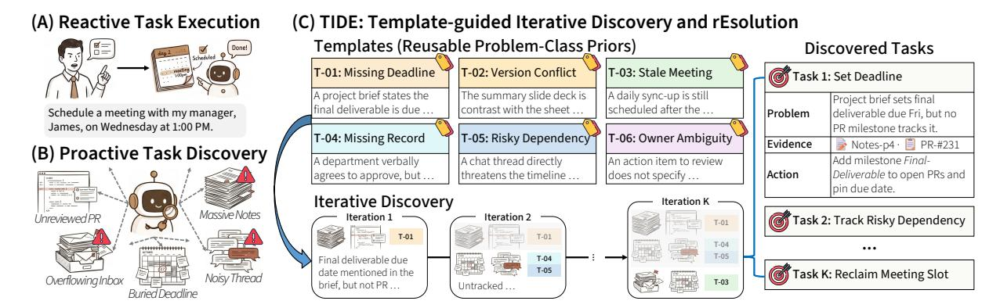
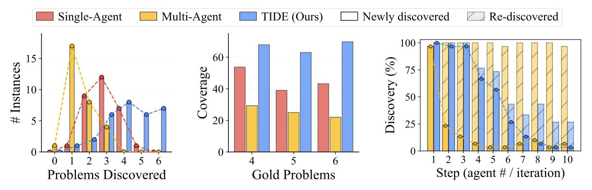
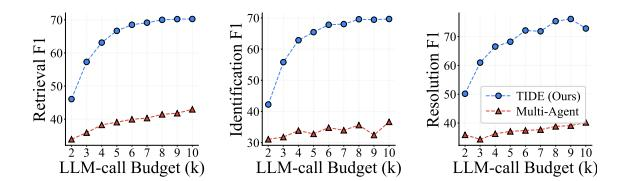
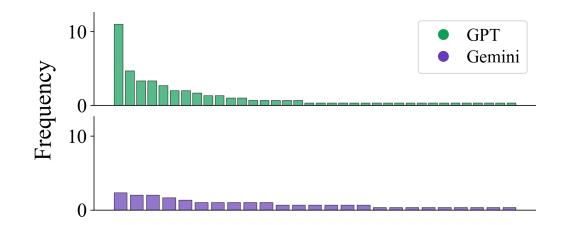
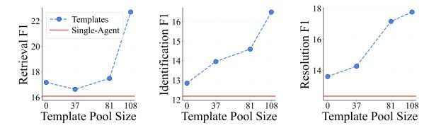

KAIST 연구팀이 “사용자가 묻지 않아도 숨겨진 문제를 찾아내는” 에이전트 프레임워크를 발표했습니다. 이름하여 TIDE (Template-guided Iterative Discovery and rEsolution).
기존 AI 어시스턴트가 “이메일 요약해줘” 같은 명시적 요청에만 반응한다면, TIDE는 문서, 이메일, 캘린더, 코드 전체를 뒤져서 사용자가 미처 인지하지 못한 문제들을 연달아 발견합니다.
문제: “모르는 문제”는 어떻게 찾나요
일상을 생각해보세요.
- 프로젝트 브리핑엔 마감일이 적혀 있는데 PR엔 마일스톤이 없다
- 같은 보고서가 두 버전으로 돌아다니는데 숫자가 다르다
- 팀원들이 안 나오는 회의가 여전히 캘린더를 점유하고 있다
이런 문제들은 각각 독립적으로 존재하고, 사용자가 명시적으로 묻지 않아도 문맥 속에 흩어져 있습니다. 숨은 문제의 개수도 미리 알 수 없죠.
기존 접근은 두 가지 한계가 있었습니다:
- 단일 패스 예측 — 한 번에 전부 찾으려 하면 가장 뚜렷한 문제만 잡고 나머지는 놓칩니다
- 일반적 프롬프트 — “문제를 찾아라”라고만 하면 에이전트가 뻔한 이야기나 추측성 주장을 내놓습니다

TIDE의 두 가지 핵심 메커니즘
1. 반복 발견 (Iterative Discovery)
한 번에 전부 예측하는 대신, 작은 배치 단위로 여러 라운드를 돕니다. 각 라운드는 이전에 이미 발견한 것들을 조건부 입력으로 받아서, 새로운 문제로 시선을 돌리는 방식입니다.
공식적으로, 라운드 에서:
이전 발견 상태 를 조건으로 삼아 새로운 후보 를 생성합니다. 빈 배치가 반환되면 종료됩니다.
핵심: 병렬로 여러 에이전트를 돌리는 것과는 fundamentally 다릅니다. 병렬 에이전트는 서로 다른 에이전트가 같은 “가장 뚜렷한 문제”에 다시 고정되지만, TIDE는 누적 상태를 공유하므로 매 라운드마다 진짜 새로운 문제를 발견합니다.


2. 사고 템플릿 (Thought Templates)
“어떤 맥락 신호를 주목해야 하는지”를 정의한 재사용 가능한 스키마입니다. 이전에 해결된 사례들에서 패턴을 추출해 만듭니다.
각 템플릿은 세 요소로 구성됩니다:
| 구성 요소 | 설명 | 예시 |
|---|---|---|
| name | 문제 클래스 라벨 | ”Conflicting Source-of-Truth” |
| pattern | 구조적 형태 | ”공유 산출물이 여러 채널에 충돌하는 버전으로 존재” |
| evidence flow | 확인해야 할 신호 순서 | ”① 산출물과 출처를 찾는다 → ② 충돌 복사본을 확인한다 → ③ 마감일과 결재자를 연결한다” |
Workspace 설정에선 40개, Code 설정에선 108개의 템플릿을 구축했습니다.
핵심: Few-shot 예시를 그대로 주는 것보다 추상화된 템플릿이 훨씬 낫습니다. 논문에서 직접 비교했는데, raw few-shot 데모를 쓴 버전은 TIDE 대비 retrieval, identification, resolution 모든 지표에서 크게 뒤집니다.
실험: 어디서, 얼마나 잘 작동하나요
두 가지 현실적 설정
Workspace 설정: 개인 작업 공간 (이메일 + 문서 + 캘린더)에서 숨겨진 병목을 찾는 환경. 30개 멀티프로블럼 인스턴스, 인스턴스당 4-6개 숨은 문제, 88-113개 후보 아티팩트.
Repository 설정: 오픈소스 Python 저장소에서 공존하는 버그를 찾고 패치까지 생성. 20개 멀티버그 인스턴스, 인스턴스당 2-41개 버그, 6-646개 후보 함수. SWE-BENCH와 TESTEXPLORA 기반.
주요 결과 (Table 1)
| Single-Agent | Multi-Agent | TIDE | |
|---|---|---|---|
| Workspace Retrieval F1 (GPT) | 54.32 | 45.41 | 70.46 |
| Workspace Resolution F1 (GPT) | 56.14 | 41.85 | 77.32 |
| Repository Coverage (GPT) | 10.34 | 12.66 | 18.61 |
| Repository Coverage (Gemini) | 17.20 | 18.51 | 25.14 |
네 가지 백본 (GPT-5 mini, Claude Sonnet 4.5, Gemini 3.5 Flash, Qwen 3.6 Flash) 모두에서 TIDE가 일관되게 최고 성능을 기록했습니다.


흥미로운 발견들
- Multi-Agent는 Single-Agent보다 못할 수 있다: 병렬 에이전트들은 서로 독립이라 같은 “가장 뚜렷한” 문제에 고정되는 현상이 발생합니다
- 템플릿은 백본 간 전이된다: GPT로 만든 템플릿을 Gemini에 써도 성능이 비슷합니다
- LLM 호출 예산 에서 Multi-Agent가 의 TIDE보다 못합니다: 병렬 확장은 반복 조건부의 대체가 아닙니다
프롬프트: 어떻게 구현되나요
TIDE는 4개의 프롬프트로 end-to-end 파이프라인을 구성합니다. 논문 부록에 전문이 공개되어 있습니다.
템플릿 구축 프롬프트 (Workspace)
해결된 사례 하나를 입력받아 추상화된 템플릿을 생성합니다:
You are an expert at extracting reusable reasoning patterns from solved examples.
Given a solved bottleneck detection example, extract an abstract reasoning template.
Solved example shown to the model:
Bottleneck: {bottleneck_description}
Evidence Documents Used:
- [{doc.type}] {doc.payload as JSON}
...
Checklist Steps:
- Retrieval: {retrieval_description}
- Identification: {identification_description}
- Task Execution: {task_description}
Rules:
1. Domain-agnostic: use general workplace language only
2. Be concise
3. Aggressive abstraction: replace specific artifacts, people, events,
metrics with generic types and descriptors
4. Preserve structural elements that define the pattern's identity
5. The pattern must be testable against varied scenarios
Output format:
{
"template_name": "Short descriptive name for this pattern",
"pattern": "Brief description of the bottleneck situation",
"evidence_flow": ["What to check first", "What to check next", ...]
}
추론 프롬프트 (Workspace)
각 반복 라운드에서 한 개의 새로운 병목을 찾습니다:
Role definition. You are a proactive agent whose goal is to serve a user.
Your task is to find and identify (without prior prompting) a singular bottleneck
in their lives, and recommend a resolution by selecting one of the pre-specified actions.
Thought templates definition. The following reasoning templates describe common
bottleneck patterns. Use these as guides when analyzing documents: match observed
situations to relevant templates to select the right action and fill parameters correctly.
Previously found bottlenecks (included only after the first iteration).
The following bottlenecks have already been identified in previous iterations.
Do NOT repeat these; find only a NEW bottleneck that is different from those listed.
If no more new bottlenecks remain, return an empty JSON object {}.
Context shown to the model:
Persona: {persona}
World Model: {world_model}
Bottleneck Pattern Templates:
[{template_id}] {template_name}
Pattern: {pattern}
Evidence flow: - {step_1} - {step_2} ...
Documents: {data_sources}
Available Actions: {available_actions}
Output format:
{
"bottlenecks": [{
"used_template_id": "TID_X",
"used_template_name": "...",
"why_matched": "Which observations satisfy the template's pattern",
"retrieved_documents": ["doc_id_1", "doc_id_2"],
"bottleneck": "Natural-language description of the issue.",
"action": {
"function_name": "action_function_name",
"parameters": {"parameter_name1": "value1", ...}
}
}]
}
코드 설정용 템플릿 구축 프롬프트
You extract reusable, repo-agnostic bug patterns from solved code-bug examples.
The gold patch defines correct behavior: the pre-patch code is the bug shape,
the post-patch code is the fix shape, and the diff encodes the intent.
Solved example shown to the model:
Repository: {repo}
Issue / Bug Report: {bottleneck_description}
Buggy Function(s):
### {func.qualname} (file: {func.path})
```python
{func.content}
Gold Patch (the fix):
{patch}Rules:
- Pattern and evidence_flow: abstract. Replace specific identifiers with role descriptors.
- Code-centric detection: each step in evidence_flow must reference observable code signals visible in the buggy code alone.
- One pattern per template.
- Broad applicability: aim for patterns where at least three different bug scenarios outside this example would still match.
Output format: { “template_name”: “Short descriptive name (abstract)”, “pattern”: “Abstract: what shape of code carries the bug and what triggers it.”, “evidence_flow”: [“Abstract: what to check first”, “Abstract: what to check next”, …] }
### 코드 설정용 추론 프롬프트
Role definition. You are a proactive code-maintenance agent whose goal is to surface issues in a Python software repository. Your task is to find and identify (without prior prompting) distinct issues worth reporting in the codebase, and recommend a resolution for each by producing a unified diff patch.
Report two kinds of issues:
- Issues that match one of the templates below
- Issues that do not fit any template but are still genuine bugs
Previously found bottlenecks (included only after the first iteration). Report only NEW issues distinct from those already returned. If no new issues remain, return an empty JSON object {}.
Output format:
{
“bottlenecks”: [{
“used_template_id”: “TID_X” or "",
“used_template_name”: ”…” or "",
“why_matched”: “Which code observations satisfy the template’s evidence_flow”,
“retrieved_documents”: [“func_id_1”, “func_id_2”],
“bottleneck”: “Natural-language description, citing concrete code evidence.”,
“action”: {
“patch”: "
---
## 정성 분석: 실제 사례
### Workspace 사례
커뮤니티 매니저의 작업 공간. 자원봉사 플랫폼이 3월 8일 행사 체크인을 중복 집계하고, 벤더 패치는 IT Security 승인 대기 중, 그 잘못된 수치가 3월 20일 경영진 브리핑에 들어갈 예정.
- **Single-Agent**: 전혀 관련 없는 시설물 조달 건을 발견. 골드 문서 5개 중 0개 검색. 식별도, 액션도 모두 오답.
- **TIDE**: 3번째 반복에서 데이터 무결성 이슈를 발견. 골드 문서 5/5 검색. 올바른 매니저에게 정확한 요약으로 에스컬레이션.
사용된 템플릿: **[TID_11] Unblocking high-stakes deliverable under SME communication lag** — "시간 제한이 있는 임원 산출물이, 수정된 결과물에 의존하고, 그 수정은 내부 승인 뒤에 갇혀 있다."
### Repository 사례
mlxtend의 McNemar 검정 함수. 두 페어 함수 `mcnemar_table`과 `mcnemar_tables`가 대각선 할당을 반대로 해놓은 멀티함수 버그.
- **Single-Agent**: 두 함수를 서로 다른 독립 버그로 식별. 공유 패턴을 놓침.
- **TIDE**: "Mirrored Index Assignment" 템플릿으로 두 함수를 단일 결합 결함으로 식별. 일관된 패치 생성.
---
## 왜 중요한가요
이 논문이 던지는 질문은 단순합니다: **"에이전트가 사용자 대신 문제를 찾을 수 있다면, 그 능력을 어떻게 체계적으로 구현할 것인가?"**
답이 두 축으로 깔끔하게 떨어집니다:
1. **반복 = 커버리지**: 여러 라운드로 누적 상태를 조건부 삼아, 가장 뚜렷한 문제 너머까지 탐색
2. **템플릿 = 정밀도**: 해결된 사례에서 추출한 추상화된 패턴으로, 각 예측을 실제 문제 클래스에 정합
그리고 이 두 축은 **상호보완적**입니다. 반복이 커버리지를, 템플릿이 정밀도를 각자 끌어올립니다.
실용적 관점에서, 이건 "더 똑똑한 프롬프트"로 끝나는 게 아닙니다. **발견 자체를 명시적 다단계 프로세스로 모델링**하는 패러다임 전환입니다. 프로액티브 어시스턴스를 만들고 싶다면, TIDE의 반복 + 템플릿 구조를 설계 패턴으로 쓸 수 있습니다.
---
## 한 줄 요약
> 에이전트가 사용자가 모르는 문제까지 찾게 만들려면, 한 번에 다 예측하지 말고 **반복적으로 발견**하면서 **재사용 가능한 패턴**으로 정밀도를 높여라.
---
**논문**: Soyeong Jeong, Jinheon Baek, Minki Kang, Sung Ju Hwang. "TIDE: Proactive Multi-Problem Discovery via Template-Guided Iteration." KAIST, 2026.
**링크**: [arXiv 2606.04743](https://arxiv.org/abs/2606.04743) | [HuggingFace Papers](https://huggingface.co/papers/2606.04743)